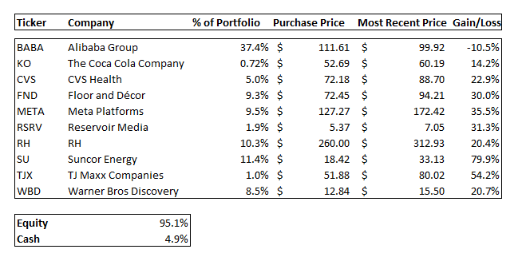
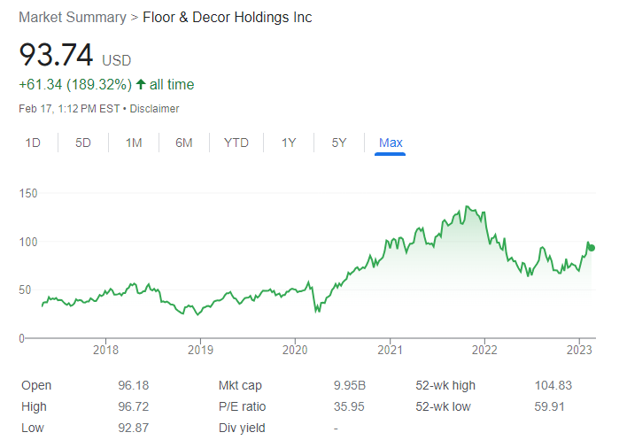
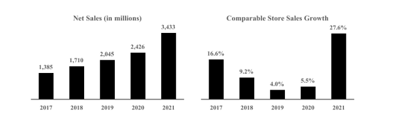
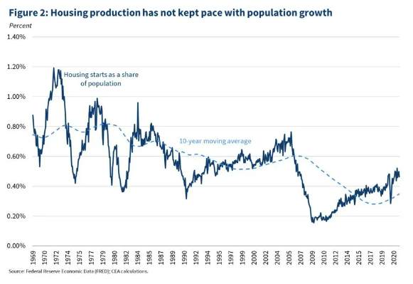
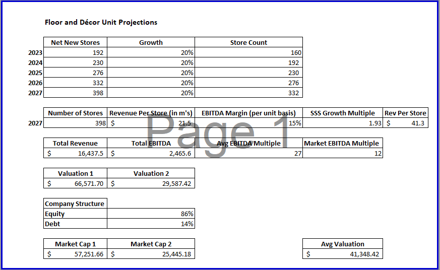

Greene Capital Partners Holdings
Q4 2022

“To make money in stocks you need
The vision to see them
The courage to buy them
The patience to hold them”
(George Fisher Baker, American Financier 1840 – 1931)
| Greene Capital Partners | S&P 500 | |
|---|---|---|
| 2022 | (10.00%) | (19.44%) |
| Since Inception | (10.00%) | (19.44%) |
The figures above represent our annual results compared to our benchmark index, the S&P 500 index. We choose the S&P 500 index not because it most closely resembles the collection of assets we own, but because it is the most comparable in terms of low cost and easy accessibility. Our goal is to compound the capital in the fund by 15% per annum. We see goals of 20% potentially attainable but less likely. Assuming you have a long-term horizon to let your capital compound with us, I believe that you are in the correct place.
If you invest at 15% per year, your money doubles every five years, and a little less than every four years at 20%. I’d hope to live for 50 more years minimum and any other time is bonus time. For every $1 we can successfully compound at 15% for 50 years, at the end of the 50 years each $1 compounds to $1083 (and to $9100 at 20% per year, see how much a 5% difference makes?). However, let’s cut the time horizon in half. Let’s say you want to interrupt the compounding wonders of investing to purchase a house or put your children through college. Compounded at 15%, that $1 becomes $32.92 in 25 years. The results are still amazing, however in the sport of investing, it's about time in it, not timing it.
Quickly, compounding at 15% would give us a 3-5% alpha. We’d beat the historical averages of the market by 3-5%. It’s closer to 5%. However, it only depends on the time period of the market which you’ve chosen as a comparison. As you can see, this past year we’ve outpaced the market by 9%. If we could somehow recreate and overlay this result to the market’s historical averages, we’d finish out at around a 20% per year return (our high-end goal). However, I ask that you judge the fund’s performance in five-year intervals and at the end of the five-year period, the results should prove to be a fair yardstick to measure the success of the fund. I want to make a clear announcement that we advise against extrapolating current results and applying them out into the future. But we will always continue to provide updates on your funds and the performances of assets you own.
YTD 2023, the fund has returned 23.06% compared to the S&P 500 7.73%. These are obviously very preliminary results, and like I mentioned, I urge you to compare performance after five-year periods. However, when we do have these moments to talk, I like to give you true transparency into how your assets are performing.
“The first rule of compounding is to never interrupt it unnecessarily.”
\- Charlie Munger
House Rules
I. Focus On the Business, Not the Stock
II. Find Great Businesses, Don’t Overpay, Do Nothing Else
IV. Buy a Bargain and Wait
V. Know What to Do, Do It, Don’t Do Anything Else
VI. Ted Williams Batting, Investing is a Game of No Called Strikes
VII. The Stock Market is a Vehicle, That Transfers Wealth, From the Impatient to the Patient
Hello!
Welcome to the beginning of an exciting journey. A journey that excites one as much as possible while attempting to stay level headed. I will start this first annual letter by introducing myself. I’m Lionel Greene Jr. A lifelong learner. A conservative and calculated thinker. A risk-averse, risk-taker. A lover of economics, storytelling, business, world order and the “stories within numbers''. This letter is my first annual letter and I want to thank you first and foremost for taking the time to read through this. I hope to provide an abundance of value for you. More than you could ever imagine. Every time you walk away from one of these letters, I want you to walk away without an ounce of doubt that this was more than worth your time. I also want you to depart with a few gems. Not just about investing or how the world works, but generally, about life. Hopefully, despite race or age, I can inspire you and you can apply some of these tidbits to your everyday life (as investing is a parallel for life anyway).
Although these letters only come around once a year, I do tend to think about them throughout the year. Having a sliver of your time, where you read my thoughts excites me. Not because I’m an egotistical maniac (which I hope I’m not), but it excites me to be a part of something that could create value in someone else’s life (also, I clearly love doing this).
Sidenote: it’s very important for an investor to realize their true intellectual abilities and limitations. They should not overstate their own ability or get swindled into believing they are smarter than they are. If you meet an overconfident investor who resembles any of these things, he’s bound to get in over his head at some point and in that case, you should run!
It’s prudent to give the guardian of your capital time to see how your investments are doing, how he thinks and to question him about his beliefs and decisions. If you are curious in how I think of things, I’d love to receive an e-mail from you, and I would be happy to elaborate further. As I mentioned, this letter is the first, so forgive me, but it will be a bit longer than the ones to come. I promise the future letters will be shorter, but I do think it’s more important for me to set the expectation correctly and establish the ground rules of the partnership.
What is The Greene Capital Partnership?
What we are is self-explanatory by name. This is a partnership between us all. A lot of money managers see their investors as dollar signs and they believe that you owe them your money for them to invest. Most importantly (which is even more egregious) they believe that you owe them your trust. You all are also investors. You may not invest in businesses, but you invest in the manager who invests capital on your behalf, and you shouldn’t take that lightly. The fact that you all trust me with your capital is no insignificant matter to me. It’s one of my most cherished accomplishments and one of my favorite things about doing this. I know that without your investments in me, I would not reap the symbiotic benefits of working with others to create value. A musician can sit alone in his room and create amazing songs time and time again however, he would lack the sheer connection from sharing the music he created. The connection that probably allowed him to enjoy listening to music in the first place. The music he fell in love with that someone else shared with him. I would get some enjoyment out of doing this alone in a personal account, studying companies day in and day out, compounding returns year over year. But isn’t the point of making music to have people listen to it?
I don’t think about this as a “hedge fund” where I use derivatives to go long or short or both. I also don’t think about inflating the dollar amount labeled “AUM” as high as I can to parade around the industry. I appreciate earning the trust of like-minded individuals who look to invest for the long term. Our partnership is long only, value oriented and long term focused. I do reserve the right to write options contracts or maybe buy corporate debt if the situation calls for it. However, these situations will be few and far in between. We buy shares of businesses that we believe are of superior quality and at a great value regarding prices we pay for them. As Warren Buffett says, the best holding period for a stock is forever. We look to compound our returns above the rate of the market for decades to come.
Why invest and what do I do?
The game I’ve chosen to play, investing, is a passion of mine for three primary reasons. First, Intellectual curiosity. Throughout my young life, I’ve yet to find something that consistently stimulates me intellectually at this level. The stock market is an amazing place to conduct real world experiments. You continually learn about the world you live in by reading company reports, industry insights and daily newspapers. Then you think critically in order to develop hypotheses or a viewpoint on a business or industry. Once you consider yourself to have developed some meaningful insight. you can then deploy an amount of money of your choosing into the market to test if your hypothesis is correct.
Can you hear the noise?
What makes an insight meaningful? In an increasingly complex world, filled with an infinite number of variables and moving parts, it is extremely difficult to make predictions that rely on future outcomes. Many things are changing, including the rate of change, which appears to be accelerating as time continues to tick. This exact combination of things may at times leave you feeling whisked around like a plastic bag in the wind, with life passing you by. In the words of the great comedian Richard Pryor, “Racism is a expletive, because it's already hard enough being a human being.” Not only do we have our “plastic bag moments,” but there are tons of external variables (like racism) that cloud our judgment. The external variables like “racism” I like to call noise. Interestingly enough, the stock market operates in the same way, as a reflection of the real world (more on this later). About five years back, I truly committed to learn who I was and to deeply understand myself as a human being. In other words, in order to see my intrinsic value I had to “tune out the noise”. There were labels the world may have attempted to put on me to define me. Being a black man is an honor and I wouldn’t want it any other way. Unfortunately, today there is a price tag that comes along with being a black man. While being a black man is a characteristic of who I am and is noticeable in skin color, it doesn’t define me. It’s noise. Because I define myself. As a lifelong learner. A conservative and calculated thinker. A risk averse, risk taker. And a lover of economics, storytelling, business and finding the stories within numbers.
Luckily, I was able to realize this in the stock market. As a follower of Warren Buffett’s principles (along with other value investors). I do not believe the market is always efficient. Oftentimes there is a lot of noise in the markets. Who’s going to be elected president? Noise. Will the CPI index for this month come in higher than expected? Noise. Will Company A beat earnings expectations for this quarter in the market? Noise. What really matters is the intrinsic value of a business, not the price tag that wiggles up and down a chart depending on how investors feel that day. If you listen to the noise, your judgment may be clouded and you could miss what matters most. Getting whipped around the market by headlines on any given day is a one-way trip to becoming a plastic bag. Here, we do everything we can to fundamentally value a business and refrain from being the plastic bag in the wind. “The stock market is there to serve you, not to instruct you” (Buffett).
If you are not familiar with the finance world, these are radically different ideologies, some may say contrarian. Being a contrarian is the first step to developing a variant perspective. A meaningful insight. However, being a contrarian does not mean your hypothesis is right. In this game, you are only correct if your logic, reasoning and hypothesis are correct. One should approach all investments with this at the front of their mind and be willing to change their mind at the drop of a dime if the evidence against them proves they should do so. In the words of Charlie Munger, “Always seek disconfirming evidence” and “Any year you don’t destroy one of your most loved ideas is probably a wasted year” (More on the dangers of confirmation bias a bit later as well).
Enough. How do I develop a meaningful insight?
Okay okay okay, I’ll tell you. Although I must warn you, it’s not easy. Mr. Munger is always keen to remind us that “It’s not supposed to be easy. And those who think it is easy are stupid,” Investor Bill Miller (also paraphrased by Nicholas Sleep), believes there are three ways to obtain meaningful insights (I agree with this assessment). Let’s call these insights competitive advantages.
1. Informational: “I know meaningful, material information that no one else in the public domain knows” This is also illegal nowadays and is widely known as insider trading. I never plan on taking this approach.
2. Analytical: “I have sliced and diced the data many different times, in many different ways and from many different angles that has led me to a superior conclusion” I like this one a lot.
3. Psychological: Behavioral. Traits such as: patience, a long-term orientation, poise, composure, discipline and work ethic are all advantages to the investor who may possess these traits. I believe these are my favorite and are also the most durable, long-lasting advantages one can possess.
Why Am I On the Right Side of the Trade?
Before making the big leap to make an investment in a company I run through a checklist to make sure I’ve covered my basis. I try to extensively cover them all, at least all I have worked to become aware of with a checklist of around a mix of 50 or so qualitative and quantitative questions. One of the questions I ask myself is, “Why am I the guy who’s on the right side of this trade?” Out of all of the transactors in the market, why am I right, and they’re all wrong? I’m applying this question now to this fund. Why out of all money managers, do I think I’m one of the guys that can outperform the index? I believe myself to possess some of the necessary advantages. Firstly, overconfidence in this industry usually leads to poor outcomes. As Warren Buffett said in his first ever televised interview, “You don’t need tons of IQ in this business. You do not need to be able to play three-dimensional chess or be in the top league in terms of bridge playing. You need a temperament that neither derives great pleasure from being with the crowd or against the crowd.” I believe; I lack what you all have.
What is Herd Mentality?
The irony is that, the reason I believe I may have the potential to outperform the market and be a great investor is because I lack something that most humans have. It’s not that I have something extraordinary that allows success, but I lack something which may in turn give me an edge. PsychCentral describes Herd Mentality as “making decisions based on the decisions of others.” Researchers say it takes as little as 5% of a group to influence a crowd’s direction and that the other 95% follow without realizing it. As members of the animal kingdom, subject to most of the same laws as animals are, us humans would benefit from learning as much as we can about who we are. Fish travel in schools and sheep know to run when one gets frightened, this is herd behavior and it's been created by years and years of evolution (lots of years, millions of them). According to Dr. Daniel Sinkovits at the University of Wisconsin, Flocking is another term in which individuals move at the same velocity to stay part of a group. During the days of cavemen, evolution brought about an interesting development in the brain. Personally, I call it the “better safe than sorry” trigger.
If you were a caveman walking in the woods and you heard a ruffle in the bushes, there were probably two outcomes. One, and the most common, the ruffle in the bush was just the wind and you have nothing to fear. However, scenario two was also possible. Scenario two, that something in the bush was a tiger waiting for you to turn your head at the right time to pounce on you and tear you to shreds. Gruesome? Maybe. However, these developments all those years ago are still innate in your genetic makeup. Fight or flight. Also, to prevent the occurrences of dying while traveling alone, we began to travel in packs. However, I’ve never had this urge to follow the group. To be clear, you are not wrong for following the herd and I am not right for choosing my own path (or vice versa). This is just the way it is. I’d also argue that it's more important knowing which you are, than being one or the other.
One of my mother’s favorite stories to tell that highlights my innate nature to “walk to the beat of my own drum,” is a story from when I was in Kindergarten. One day, she picked me up after school and all of the kids were running around during recess. She came over to pick me up and asked me, “Why aren’t you playing with the other kids?” I replied, “What kids?”
Why Investors Don’t Outperform: Let’s ask Instagram
Apparently, fund managers aren’t too keen on Instagram these days (or Facebook and Whatsapp for that matter). However, it offers priceless insights into our psychological build. Dopamine is a naturally occurring “feel-good” chemical that triggers our inner rewards system. It’s released when we eat our favorite food, have sex, but also when we take addictive drugs. Social media mimics human connection which prompts a dopamine release when we get a like or a comment (we’ve heard this shpiel a thousand times right?). The interesting part to me comes when we ask, “What happens when we don’t get the dopamine?” Now we’re talking…
Things that are addictive release more dopamine. Like Instagram or other various forms of social proof and external validation. The more we activate these dopamine releases, the more we crave it. This is where we spiral. The more we crave it, the more we do it, the more this repetitive action becomes less exciting than it was. There’s a diminishing marginal return to each new like or comment. Each time we get a new like, that new like does less for us. Now we need more new likes, only to do what it used to do and what it used to do is no longer enough (just like a drug that got an addict high before he built a tolerance to it)! Teen Vogue likened it to a slot machine. In which, “we don’t know if we’re going to have positive interactions when we log onto our social media apps, but we know we might. So, we’re gambling on the outcome, even though most often it’s a negative one. This is where the (anti)magic happens. Here we enter a dopamine deficit. We experience less pleasure when we’re not using the drug that made our dopamine surge and we become even sadder than what was once our baseline. Our brains restore homeostasis by pushing dopamine levels below baseline in order to compensate for things that release a lot of dopamine all at once. This is what occurs when we compare ourselves to thousands of people we don’t know online. Or even comparing our spouse or significant other to thousands of other people we don’t know online (which I strongly advise against).
I’m not telling you this because I’m a motivational speaker, or because I want you to follow my Instagram (no pressure but feel free, @lionel.nyc, things are ok in moderation, right?). This highlights the pitfalls modern society has encouraged around external validation. Now imagine this among money managers. What happens if they compare their AUM to another firm? OR compare their returns against another firm’s year by year or quarter by quarter. Some firms compare their trading results DAY BY DAY. Exhausting (I’m not anti-trading or anti-technical analysis. I believe that it has a use in the world, but for me, the use case isn’t nearly as frequent or rigorous). Money managers get validation that they all perform about average and can assure their clients that “everybody else did about what we did. So although you may not be a star, ‘no one is,’ but at least you’re not a loser… right?”
I have a point of contention with the CAPM model, where I have the opposite belief than most. I believe the volatility of a stock’s price does not determine its value, or what your returns will be in the long-run. Just as Bill Miller said in his 2017 investor letter, “Volatility is the price you pay for returns.” Let’s do a small experiment, being that we’re on holy ground for experiments (the stock market). Let’s say you and I both have a dollar. Now for the next 3 days the market tells us our dollars are worth $0.50 on the first day, $0.25 on the second day, and $0.75 on the third day. They see “risk,” they feel “fear”. I see opportunity. Also, I’m sure we can agree that we both know that at the end of the day it's worth $1.00 despite the price someone is willing to ask us to sell it to them for. Also, if you bought the dollar at $0.50 and sold it for $1.00 in 5 years, you’d have an annual return of 15% per year (26% if you get the dollar in 3 years and 19% if you get the dollar in four years), while the market averages about 9% to 11% per year (depending on the time frame chosen). This is what I attempt to do; find dollar bills trading at $0.50 that have a high probability of realizing their intrinsic value of a full dollar, and will potentially grow to being worth more than a dollar (the dollars are companies if I got too excited about that analogy. Sorry, I like that one a lot).
Now, I’m glad we have established that volatility is not risk. We view risk as a permanent loss of capital. Over five-year periods, I feel equipped with tools to outperform the market and to do so at a risk adjusted rate. Not all 10% returns are equal, and I will explain why in one moment. Volatility is gut-wrenching and potentially the scariest part of investing (hence why the VIX is called the “fear index”), however I don’t see volatility as being synonymous with risk. In my Risk Management 700 level classes at Queens College (MS), the CAPM (capital asset pricing model) is a widely believed model in finance on how to calculate the return of an asset.
It costs money to make money. The cost of making money is called WACC (Weighted Average Cost of Capital). However, WACC is broken up into two parts, the cost of equity and the cost of debt. Combined, these give you the WACC (valuing each by the corresponding weights equity or debt may occupy in the financial profile of the company’s funding). The WACC is what you’d use to discount the future returns of an investment in order to find its present value. As we know, rule number one is that “Every investment is the present value of its future cash flows”. Companies can either issue debt or equity, to raise money to invest into the future prospects of the business. Debt, we can see the cost of in the open market, or by poking through the company’s 10-K. However the cost of equity is where this gets a bit tricky.
The equation for cost of equity is as follows:
E(Ri) = Rf + Bi * (ERm – Rf)
E(Ri) = Expected return from the asset
Rf = Risk free rate (usually widely identified as the 10 or 20 year rate on US treasuries)
Bi = sensitivity, or Beta of the individual stock
Rm = expected return of the market
(Erm – Rf) = Market Risk Premium
Now this isn’t all bad. Before I express my concerns, I want to explain what the equation says. The CAPM model is attempting to calculate a return for the stock. It says that the expected return of the asset is dependent upon the risk-free rate, with an added premium on top of the risk free rate, adjusted for the stock’s Beta (how differently the share price moves in relation to the market index). My biggest issue with this model is that the beta tracks both upward and downward fluctuations. If a stock violently swings upward, it will tell you to expect a low return from the stock because the high volatility introduces unjustifiable risk. However, you and I both know that stocks going up is (more times than not) a good thing. I don’t agree with the CAPM as a primary source of valuing a business. Short term price fluctuations generally aren’t predictable with high degrees of accuracy over long periods of time. However, as Howard Marks says, in The Most Important Thing, (paraphrase) you cannot eliminate risk completely. Every time you are investing, you are introducing risk into the equation. However, you must do three things when it comes to risk. First, Recognize the risk. Second, Understand the risk. Third, Control the risk. Although each business is unique, a few common risk factors that seem to apply across the board are: economic risk, legal risk, market risk, cost risk, inflation risk, competitive risk, execution risk. It is here that the CAPM provides a great starting point to find a hurdle rate you’d like your investments to overcome, in order to expect a certain return.
As you introduce risk into your investment decisions you must be aware of the various risks posed to the business. Then understand the implications of these risks if they were to materialize. Lastly, control them. The best way to control risk is by paying a price below the intrinsic value of the business. This is what we intend to do with each investment we make. For every dollar, we want to be well compensated for the risk we are taking, or as Ben Graham would say, we develop a “margin of safety”. Recovering from a big loss is much more difficult than any other outcomes (hence my earlier note, that not all 10% returns are equal). Risk introduces a lower confidence level to the returns we will receive. If there’s a higher chance of losing all of your money vs a small chance, the latter would be the more “valuable” of the 10% options, although they may seem equal. In other words, We operate in markets the same way you do when you sit in a car and fasten your seatbelt, “Safety First.”
Money managers, however, try to analyze what the company is going to do in the few months or so, which is why they underperform the indexes on average. For 20 years, S&P provided scorecards that compare active investors to the indexes. Over the most recent full 20 year period, fewer than 10% of active U.S. stock funds managed to beat their benchmarks. Wait it gets better… How many funds ended up in the top 50% year after year over five years? The answer was only one percent. In plain English: imagine a public school with 2,100 students in a class. Imagine only 1% of the 2,100 (21 students) had better than average performances every year over five years. You’d bet NYC would close that school down. However, Wall Street gets to make money hand over fist off of every trade, every transaction and each dollar clients have invested with them despite their performance. Now do you understand why they don’t “take risks?” If they were to underperform for a year or two, they’d lose clients, unwillingly trim the AUM due to client attrition after seeing the funds poor performance and end up losing dollars for themselves. So instead of communicating with their clients, they choose mediocrity. Why? Because “Hey, at least you're not a loser, right?”
You Don’t Get It, I’m Going to Buy Low and Sell High
The irony is that the only way to outperform the fund is to underperform from time to time. Instead of frantically jumping in and out, the answer should be to hold on through thick and thin watching that $0.50 realize its $1.00 value. This way you walk away with 15% per annum and they walk away with mediocre returns and disgruntled, or swindled clients. I deeply regret to inform you that you can’t time the market. Like I mentioned earlier, you’re better off holding through thick and thin as it's incredibly difficult to predict short term market fluctuations consistently, over long periods of time. So difficult that it isn’t done successfully.
One of my favorite studies to show people is how much their impatience could cost them. In a study done by Wells Fargo, its proven that you shouldn’t attempt to time markets, and those who often believe they can in fact cannot corral their emotions when times get difficult. Just hold on tight. It’s about time in the market, not timing the market. CNBC also ran a similar study with similar findings. “Looking at data going back to 1930, the firm found that if an investor sat out the S&P 500’s 10 best days per decade, total returns would be significantly lower than the return for investors who waited it out. The best days usually have a recoil effect where the best days follow the largest drops. Panic selling leads to missed opportunities. We never panic. The study by Bank of America shows, “Going back to 1930, if an investor missed the S&P 500’s 10 best days each decade, the total return would stand at 28%.” That’s it. 90 years of holding, 28% return. On the other hand, if you would have included those extra “best 10 days per decade” the return would now sit at 17,715%. Much better. Also holding on for longer periods of time can help decrease the risk of permanent loss. As any 10 year returns for the S&P 500 have been negative just 6% of the time dating back to 1929. Easier said than done, but hold for 10 years, and there’s a 94% chance you will maintain (or increase) the value of your holdings.
Warren Buffett says it's best to operate by an inner scorecard, which was taught to him by his father. I was also given this valuable lesson by my father. I watched my father do what’s best for his family day in and day out. He ran his own construction business, and I learned by working with him every summer from ages 9 to 19. I saw him earn the trust of each client. The way he gave clients estimates was different from the other contractors. He would always tell clients the truth. Sometimes he would give them information for free, fix small things for free and sometimes, even to my surprise, discourage them from using a contractor for the job. Taking over the construction business was never my thing, but taking control over my inner scorecard, and living my life by my own values that I hold highly is more important than any business lesson. I encourage each of you to write out your own inner scorecard as an exercise and find what’s valuable to you. Keep it close to your heart and operate with those in the back (or the front) of your mind depending on the situation. Don’t sacrifice your values, who you are or your integrity for anything, you won’t regret it.
“Five for the Next Fifty”
Whew. What a tangent. So back to the topic, why else do I love investing? Second, the game of investing never stops. Although some may say this is a gift and a curse, I look at it as an “Infinite Game”. I’ve always looked to find something I could commit my life to and play the game forever.
Five years ago, I made a conscious decision to dedicate the next five years of my life (if less was needed so be it), to figure out what I wanted to do for the next fifty years. Five for the Next Fifty. I was reintroduced to markets after constantly having touchpoints with them throughout the years and this time I’m all in. As Simon Sinek would say, I’m playing the Infinite Game. My goal is not to “win the game of investing.” My goal is to keep playing the game. “And when it is our time to leave the game, we will look back at our lives and our careers and say, ‘I lived a life worth living.’”
Lastly, I said I’d come back to the idea that “The highest human act may be to build a business”. Nipsey Hussle says, “The highest human act is to inspire”. What better way to inspire a mass of people than by creating a business. By creating a business, you are tearing the fabric of reality and forcing the world and its future to bend to your will. You’re making an impact on the world and people around you, hopefully in the form of inspiration. As Gary Friedman RH CEO (formerly Restoration Hardware) says, “Lessons that can’t be learned in a classroom, or by managing a business, must be learned by building one.”. Gary also says “Our goal to position RH as the arbiter of taste for the home has proven to be both disruptive and lucrative, as we continue our quest to build the most admired brand in the world.” How’s that for inspiration? The iPhone has inspired and empowered millions of people (if not billions) and given them the tools to strengthen their communication with families, start businesses, access their health information easier and much more. Investing is one of the highest art forms, it allows me to be the most creative I’ve ever been. Capitalism may not be perfect, however it allows for the highest combination of individualism and productivity that creates value for the masses. It gives individuals the freedom to pursue their individual passions from baking to car design. Steve Jobs wanted to create computers because it was his passion. His perfectionist nature, entrepreneurial spirit and unwillingness to conform created immeasurable value for the entire world.
“There You Have It”
There you have it! This is how we will attempt to achieve all of these phenomenal gains the future holds for us. Here are all of our morals, ethics and tactics in one place. Following the end of this letter, I will dive into the study of one of the businesses we own, to dive a bit deeper and highlight some things we look for. Enjoy! I look forward to seeing you next year! Happy compounding!
Sincerely,
Lionel Greene
Floor and Decor:
A Natural Long-Term Compounder
I tend to refrain from speaking on companies that I currently own, am currently buying or currently selling, to minimize any confirmation biases that might arise. The more you repeat things you already know or believe, the more likely you are to continue to believe them. You want to guard against biases in order to always make rational fact-based decisions, and to maintain the unbiased awareness it takes to make the proper decision on the stock, whether it be to buy, sell or hold. However, the long term orientation of this investment I believe allows me to speak on this. I cannot foresee a circumstance in the near future (and hopefully distant future) where I’d sell shares in this business.
Company Overview
Floor and Décor (Ticker: $FND) is a high growth, differentiated, multi-channel specialty retailer and commercial flooring distributor of hard surface flooring and related accessories. The company was founded in the year 2000 by the Vice Chairman Vincent West, in Atlanta, Georgia with the vision to be the low-price leader for hard surface flooring. The company has 160 warehouse-format stores and two small design studios across 33 states (2021 Annual Report). Floor and Décor offers the industry’s broadest in-stock assortment of tile, wood, laminate, vinyl, and natural stone flooring along with decorative and installation accessories and adjacent categories at everyday low prices, which positions them as the one-stop destination for their customers’ entire hard surface flooring needs (FND 2021 10K). Today, February 16th, 2023, the stock trades at $94.97 at the open, which translates to a $10.49B market cap and a 37x earnings multiple. The stock's 52-week low is $59.91, the 52 week high is $106.06 and they do not pay a dividend.
Below is a chart of the company’s share price since its IPO in 2017. Based on historical performance in the market, the company shares have continued to rise, with drawdowns in 2020 (Covid-19). Most recently shares have begun to rebound after a slump which began in November 2021 and seemingly bottomed in June 2022:

How Does the Company Make Money?
Floor and Décor records revenues from the sales of their flooring assortment via their in-store and online channels. The total revenue in 2021 was $3.433B as the company has grown total net sales from $1.38B to $3.43B from fiscal 2017 to fiscal 2021, representing a CAGR of 25.5% over the past five years. Over the past five years the store count has grown from 83 warehouse-format stores to 160 warehouse-format stores which is a CAGR of 17.8%. This gives us revenue per store of $21.45m. 70% of revenue comes from homeowners, and 30% comes from their “Pros” (contractors, commercial workers, flooring professionals). In the retail industry, an important number that highlights how rigorously the engine of the business is cranking, is same store sales growth. This puts revenue under a magnifying glass on a per store basis and highlights the health of revenue growth per store. Floor and Décor has also grown same store sales an average of 14.2% per year over the past five years.
Expansion of the store count is the primary catalyst for revenue growth as the goal of the company is to open a minimum of 500 stores in the United States over the next 8 to 10 years. This represents over a 3x expansion over the next decade. They have increasingly been opening stores and seem to be consistently and methodically opening new stores as they finished the most recent quarter (as of 11/3/22) with 178 warehouse-format stores. Below is a visual representation of these measures.

Competitive Advantages
Floor and Decor benefits from durable and sustainable competitive advantages innate to their business model.
1. No True Competitor: Floor and Decor is a category killer. A big box retailer with no true competitor in sight. Growing up with my Dad who was a contractor, I understand the unique value proposition of this business. At some point while we were doing the job, the most frustrating part of the job would arrive. We’d have to shop for the flooring. We’d take trips to Home Depot or Lowe’s and they’d never quite have the right style. They would also never have enough inventory to do the whole floor so we’d have to place a special order which would elongate the timing of the job. Having a network of 78,000 sq ft warehouse stores dedicated to in-stock flooring (high quantities) provides a distinct value proposition for their customers. These stores have a large variety of options and offer industry low prices, which creates irreplaceable value for their customers.
2. Complex Logistics Network: There may not be a business that is Amazon-proof, however Floor and Decor comes the closest. Flooring is a very difficult product to transport and the nature of its purchase lends to in person experiences and not online. Visualizing flooring online is difficult and Floor and Decor has massive warehouses, with huge flooring displays that make it easy to visualize. Flooring materials are heavy, require specialty transportation and are more expensive to deliver than the products that other companies are currently transporting. It would cost significantly more for existing businesses to venture into this line of business and the economic cost would be too much to take on for profit that would not add a material impact to the bottom line.
3. Strong Unit Economics: The strong unit economics of the business model, allows for high returns on invested capital. Also, the experience of the management team allows for the openings of new warehouse-format stores to be replicated. This allows predictable growth with high visibility out into the future.
4. Entrepreneurial Customer Base: Like my Dad, a large portion of the customer base for Floor and Decor are contractors. Homeowners, as the largest segment of revenue, also tend to be assisted by a contractor. This creates a very motivated customer. Without booking jobs for their individual businesses, their families don’t eat and they don’t eat. They need to continually book jobs, and use Floor and Decor products to complete these jobs.
Industry Dynamics
According to Zippia, the U.S. construction industry is valued at over $1.6 trillion in 2021. Construction is the 12th largest industry in the country and accounts for approximately 4.3% of the U.S. total GDP. This is close to the long term average. As US GDP continues to grow at an average of 3% per year, construction will continue to be a meaningful portion of US GDP. Homeowners are the largest segment of Floor & Decors revenue. According to the National Association of Home Builders, housing contributes to 15-18% of US GDP. Floor and Decor will consistently contribute to a strong, necessary and growing part of the US economy.
The flooring industry has undergone unique changes over the years. The main transformation that has been witnessed over the last few decades and is likely to continue into the future is the removal of carpeting. Hard surface flooring (tile, wood, vinyl, laminate, natural stone) aligns with the modern design styles that have taken over the world. There are also health benefits to expanding into the hard flooring space. It’s friendlier for those who have allergies, it's easier to clean and as 67% of Americans own a pet (avma.org), it is the best option for cleaning pet hair, dander and mishaps. Hard surface flooring has a long runway for consistent growth.
Another aspect of the hard surface flooring industry is the fact that the average age of the home in the US is increasing. The median home age in America is 39 years old (eyesonhousing.org). Hard surface flooring usually needs to be replaced every 30 years. These converging dynamics provide another tailwind for Floor & Decor. Millennials who are now entering the home buying market, are the largest demographic of homebuyers and will propel the construction industry moving forward.
The supply-demand dynamics of the real estate market from 2019-2022 has shown how little inventory actually exists. In December 2021, total US inventory dropped to its lowest level in history at 910,100 units (NAR). Although the Federal Reserve is determined to raise interest rates to curtail demand, it has yet to have the desired effect as the US consumer seems resilient and also seems determined to purchase houses. Aside from a peak in supply in 2008 (when the housing market crashed) the long term trendline for housing inventory has declined since the turn of the century. Housing starts have also not kept pace with population growth. We now realize how big this problem is. The government and homebuilders across the country are determined to bring more houses to market in order to balance the supply with demand, and to give access to more affordable homes across the country. It goes without saying that these homes will need floors and this adds to the TAM of Floor & Decor. Below is a chart representing the Housing starts as a share of the population in this country (from thewhitehouse.gov).

The Reflexive Nature of TAM
Over time, Floor and Decor has found ways to extend their runway and increase their TAM. As we’ve witnessed with countless companies who ventured forward expanding into an industry, as they pioneer their journey, the industry around them grows. This idea of reflexivity I learned from George Soros book The Alchemy of Finance. His theory is that reflexivity plays a bigger part in the economy than we realize. As George Soros states, “if investors believe that markets are efficient then that belief will change the way they invest, and that in turn will change the nature of the markets they are observing … That is the principle of reflexivity". This mental model is easily applicable to TAM. In LuluLemon’s S-1 they referred to their total addressable market as a $500million opportunity. However, as they continued to reinvent yogawear, loungewear and the luxurious athleisure category the company has grown to a market cap of $40billion. As Floor and Decor evolved, they shifted their focus from only residential, to include commercial. This increased their TAM by $8-$13B as they label their TAM as a total of $41B ($25B in residential remodel and another $16B in commercial spending).
Risks to the Business
Every business faces risk and will have to endure obstacles, challenges and turbulence as the business evolves throughout time. The management team has proven their ability to handle a challenging and ever changing environment, while providing value for shareholders. However, there are risks that lie ahead and here are the highlights of a few.
1. Execution Risk: As Mike Tyson famously said, “Everyone has a plan until they get punched in the face” Each business has a plan that sounds amazing on paper, however if they find difficulties executing this plan, the business becomes riskier. Management's keen ability to execute and consistently open profitable stores over the past decade is one of the mitigants to this risk. CEO of Floor and Decor Tom Taylor began his career at age 16 at a Home Depot in Miami. He worked his way up to manager, and continued to climb the ranks in the company until he became the Executive Vice President of Operations. Overseeing all 2,200 stores in the US, he continued to elevate by becoming the Executive Vice President of Merchandising and Marketing in 2006. He then became CEO of Floor and Decor in 2012 bringing significant home improvement retail experience to the company and to the industry.
This is the type of experience that has led to Floor and Decor executing on growing from their first store in Atlanta in 2000, to 178 today; and from 83 in 2016 to 178 today. The company has a fixed vision that they keep as their north star, and reverse engineer their way back to today. Nicholas Sleep in his Nomad Capital Partnership Investment Letters would call this Destination Analysis. As time goes on, Floor and Decor will maintain this strong level of execution by continuing to set reachable expansion targets, consistently remaining profitable, and achieving near term goals such as increasing their store count by 20% per year for the foreseeable future.
Lastly, management has developed a disciplined approach to new store development. By aggregating regional economic data, the decision to open a new store is based on an analytical, research-driven process. Site selection must be reviewed and approved in a real estate approval process. Key demographics management focuses on are aging of homes in the area, length of home ownership and the age and income of homeowners in the area. This leads to confidence and high visibility in opening profitable stores.
2. Economic Risk: Fluctuations in the economy are always a risk to every business model as they are a byproduct of the environment in which we operate. If the existing sales, new sales or interest rates affect the frequency of activity in the real estate market, Floor and Decor could experience headwinds. However, over the long term in the US economy, as GDP continues a long term growth, the housing sector has benefitted from these economic forces. The management team has been able to produce results through these tumultuous times. Throughout the current macroeconomic uncertainty in Q3, the company has grown sales 25% year over year for this quarter. Also, it can be argued that these concerns are currently baked into the stock price as it is trading at a discount to its historical average PE of 40.
3. Competition Risk: The risk of competition is also a risk to any business as Warren Buffett cleverly described capitalism as “creative destruction”. As you begin to achieve high returns, or economic prosperity from a unique business model, companies begin to take notice of what you’re doing and join in to reap those same benefits. This competition risk can come in many forms. It could be:
1. Nationwide Retailers like Home Depot or Lowe’s looking to expand their imprint into the industry
2. Existing Suppliers who look to the industry and want to obtain some of the rewards that retailing may lead to, instead of only producing the product on the back end.
3. Fragmented Industry Competitors prove to be formidable opponents as well. Usually fragmented industry dynamics lead to consolidation for larger competitors which is a tailwind. However, operating in a fragmented industry may prove for some hyper-local areas to be uninvestable and impenetrable by a larger opponent. There are two reasons for this. First, it may not make economic sense
4. Unforeseen Competitors can enter the business as a new retailer
Unit Economics
The broad goal of the company is to open a minimum of 500 stores in the next 8-10 years. However, let’s take a more granular approach into understanding the profitability of these stores on an individual basis.
The store model targets a store size of 70,000-80,000 square feet. The total initial net cash investment is approximately $8 million to $10 million (management also states that this could increase as they have the ability to own and self-develop more new stores). Within the first year, each new store brings in net sales on average of $14 million to $16 million and a minimum of $2.5 million in four-wall adjusted EBITDA. Invthe third year, each store on average provides a cash on cash return of 50%. In the first year, the store operates somewhere in the range of a 15-17% EBITDA margin and a 30% return on invested capital (based on EBITDA) into each new warehouse that is built. Every year, we can expect 20% new store growth into the future with a minimum of $2.5million in EBITDA at the end of the first full year, with same store sales growing at an average of 14%.
Valuation
To provide a range of outcomes we will create a few different cases. Generally, both cases will imply that management will continue to execute the store growth that they strive for.
Bear Case: In this scenario we will assume that the company will execute on their objectives of 20% store expansion per year. The company will also operate at the same historical EBITDA margin of 15% while growing same store sales at 14%. However, the biggest factor we will adjust for is the EBITDA multiple. As companies get bigger, it becomes harder for them to grow. Which assumes that although the company has proven to be a high growth company, its best days for growth are behind it. We will assume that the EBITDA margins will not be compressed further, as it is highly unlikely that the company will regress operationally. Companies tend to benefit from margin expansion over the years as they grow, witnessing growth capex remain as a fixed amount of revenue while revenues increase. The average multiple in the private market for transactions is between 8x-12x EBITDA and we will value the company at 12x EBITDA as a “benchmark metric” if the multiple contracted over time back to a normal level.
Bull Case: In this scenario we will assume that the company will execute on their objectives of 20% store expansion per year. The company will also operate at the same historical EBITDA margin of 15% while growing same store sales at 14%. In this scenario, the multiple will be based on the historical multiple of the business . On an EV/EBITDA basis, the company historically trades at 27 times. In essence, here is a breakdown of the five year unit economic projections of the business and the range of values the business can fall into:

Recommendation
For those with a five year time horizon, buying the stock at today’s levels will prove to be beneficial. On the low side, the enterprise value of the business will double, which equals a 15% return per annum. On the high side, which is highly dependent on the market perspective, the value of the business could expand up to five and a half times. Although this valuation appears to be lofty, if the market remains at least historically optimistic on this business, and management executes on their 20% store expansion plan without sacrificing same store sales growth, the value of this business on an EBITDA basis appears to be in the correct ballpark. Further analysis on gross margins, operating margins, competitive advantages or risks can be inquired about with a further detailed analysis!
Lionel Greene
September 2023